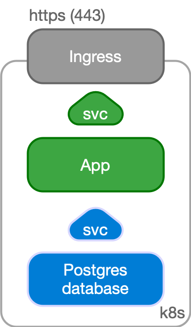
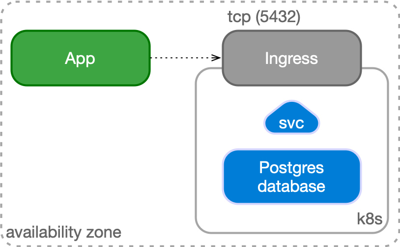

Use cases
CloudNativePG has been designed to work with applications that reside in the same Kubernetes cluster, for a full cloud native experience.
However, it might happen that, while the database can be hosted inside a Kubernetes cluster, applications cannot be containerized at the same time and need to run in a traditional environment such as a VM.
Case 1: Applications inside Kubernetes
In a typical situation, the application and the database run in the same namespace inside a Kubernetes cluster.

The application, normally stateless, is managed as a standard Deployment,
with multiple replicas spread over different Kubernetes node, and internally
exposed through a ClusterIP service.
The service is exposed externally to the end user through an Ingress and the
provider's load balancer facility, via HTTPS.
The application uses the backend PostgreSQL database to keep track of the state
in a reliable and persistent way. The application refers to the read-write
service exposed by the Cluster resource defined by CloudNativePG,
which points to the current primary instance, through a TLS connection. The
Cluster resource embeds the logic of single primary and multiple standby
architecture, hiding the complexity of managing a high availability cluster in
Postgres.

Case 2: Applications outside Kubernetes
Another possible use case is to manage your PostgreSQL database inside Kubernetes, while having your applications outside of it (for example in a virtualized environment). In this case, PostgreSQL is represented by an IP address (or host name) and a TCP port, corresponding to the defined Ingress resource in Kubernetes.
The application can still benefit from a TLS connection to PostgreSQL.
